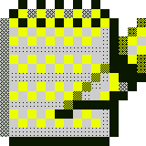
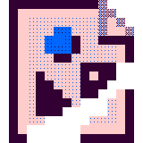

Dissertação de mestrado apresentada em 2024 à Faculdade de Arquitetura e Urbanismo (fauusp), com orientação de Artur Rozestraten.
SOUZA, Guilherme A. Perspectivas para uma pedagogia da matéria: Potência pedagógica da atividade poética e representações como suporte material da cognição. 2024. Dissertação (Mestrado em Tecnologia da Arquitetura) — Faculdade de Arquitetura e Urbanismo, Universidade de São Paulo, São Paulo, 2024.
Percorrendo um campo interdisciplinar, este trabalho propõe uma investigação a respeito de um tema que tem aproveitado grande popularidade nas últimas décadas: a educação maker. Apresenta-se o histórico contextualizado de suas influências a partir de um ponto de vista crítico, apontando seu caráter ideológico. O objeto de estudo é delimitado: o potencial do contato direto com a materialidade como cognição. Problematiza-se os preceitos que são divulgados como novidades, consultando a pedagogia a partir do século XVII para reconhecer os debates que são colocados em torno deste objeto desde então. A seguir, das ciências cognitivas se aproveita a abordagem enativista, que dá estofo para o mesmo objeto. Finalmente, encontra-se na teoria da representação os subsídios para um adequado enfrentamento reflexivo da questão. Trata-se de revisar os fundamentos de uma pedagogia da matéria, com perspectiva imaginal, representacional e cognitiva. Como devaneio material imaginativo, o trabalho apresenta também a dimensão da poiesis enquanto manifestação da vontade embutida no ensaiar material de futuros possíveis.
Perspectivas para uma Pedagogia da Matéria
(versão original apresentada à banca)
colagem digital com trabalho de Clark Richert e outros, sob fair use.
todo o material deste site é disponibilizado sob a licensa Creative Commons Attribution-ShareAlike 4.0 International